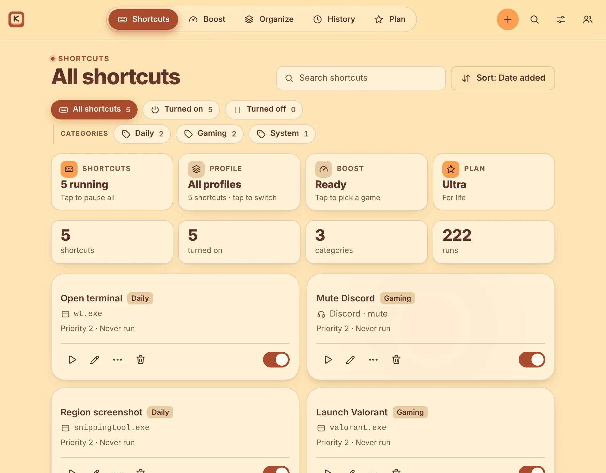
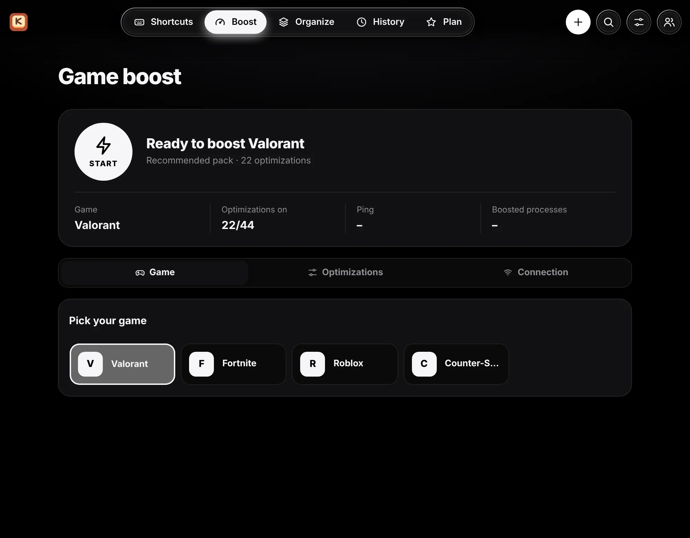
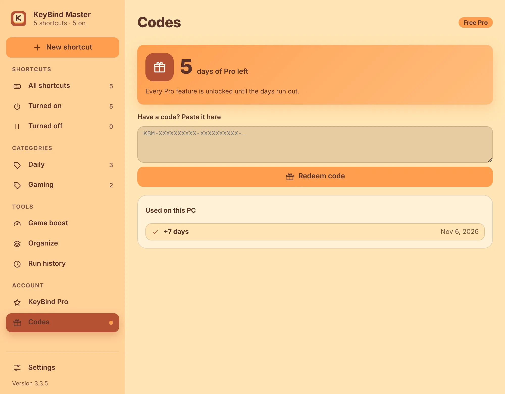

For Windows 10 and 11
Every shortcut you wish Windows had.
Bind any key combination to a script, an app, a website, Discord or your PC. Then flip on Boost and let your games have the whole machine.
Free for 7 days. No admin rights needed.

108 system actions
36 game optimizations
5 ready-made packs
0 admin rights
Press the keys. It happens.
Shortcuts work in every app, even with the window closed. If Windows or another program already owns a combination, KeyBind Master takes it over.
- Run PowerShell, batch, Python or Node scripts with no console window
- Open apps, websites and games from Steam, Epic or Riot
- Mute and deafen Discord, move between channels, answer calls
- Volume, lock, sleep, screenshots, virtual desktops, snap and more
- Priority levels settle clashes between two shortcuts on the same keys
- A three-step editor with a Test button before you save
Boost your game, then put everything back.
Pick a game, check your connection to the closest servers, and choose a pack. Every change is written to a journal, so Boost undoes itself when you stop, even after a crash.
- RecommendedA safe mix for most games
- EsportsLowest delay and highest FPS
- BalancedA light touch that keeps the PC cool
- StreamingSmooth game with clip recording
- LaptopSpeed without draining the battery
Includes input lag and delay tweaks, a faster Roblox, and category switches you can open and close.

Pro is free for your first week.
Every Pro feature is unlocked for 7 days from the first time you open the app. When you get a code from the author, paste it into the Codes tab and the days are added on the spot.
- Each code works once per PC
- Codes are checked on your PC, so no account and no sign-in
- Invite a friend and you both get 7 more days
- Your shortcuts keep working when the days run out

Ready in under a minute.
Download, double-click, done. The app opens when the install finishes and sits in your system tray.
Download for WindowsWindows 10 or 11 · 64-bit
Questions
Windows warns me when I run the installer.
The installer is not code-signed yet, so SmartScreen may ask once. Choose More info, then Run anyway. Updates install without that warning.
Do I need admin rights?
No. KeyBind Master installs for your user only.
Which Windows versions work?
Windows 10 and Windows 11. A few actions need a newer build, and the app greys those out and tells you which version unlocks them.
How do updates work?
The app checks for new versions and installs them after verifying a signature. Every update is required, so everyone stays on the same safe version.
Does it send my data anywhere?
Your shortcuts stay on your PC. The app only goes online for updates, codes, invites and the connection check. Read the privacy policy for every detail.
What happens after the 7 free days?
Your shortcuts keep running. Pro features pause until you add days with a code.